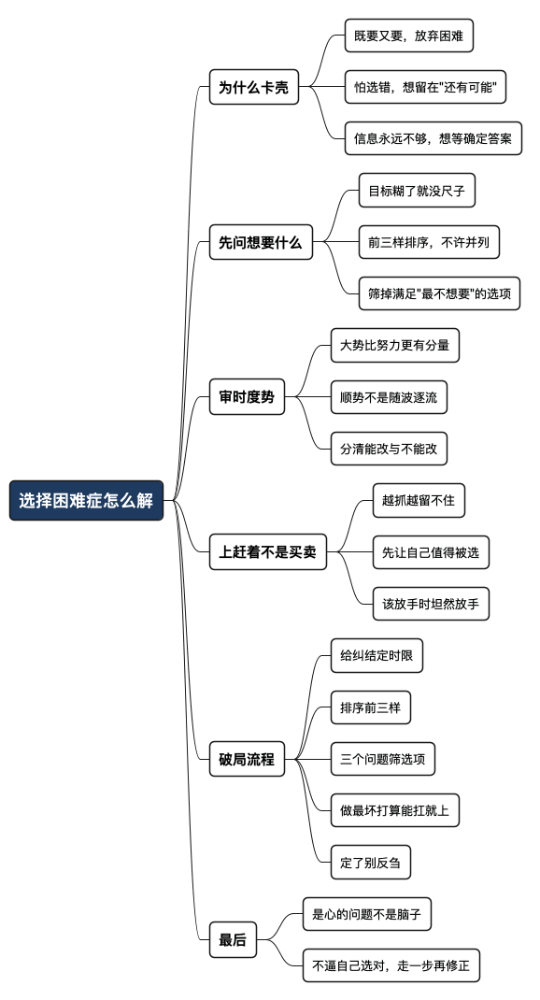

选择困难症怎么解
Posted on 四 09 7月 2026 in Journal
| Abstract | 选择困难症怎么解 |
|---|---|
| Authors | Walter Fan |
| Category | Journal |
| Version | v1.0 |
| Updated | 2026-07-09 |
| License | CC-BY-NC-ND 4.0 |
选择困难症怎么解
点外卖，两家店翻来覆去比了二十分钟，最后把手机一扔，泡了包方便面。
这大概是我“选择困难症”最轻的一种发作。重的时候，是站在人生的十字路口上：要不要换工作，要不要接这个项目，要不要搬到另一座城市。前思后想，翻来覆去，把每条路的好处坏处列了一张又一张表，最后还是原地打转，一个决定也做不出来。
同一个路口，几个起点相近的人选了不同的方向，从此走上大相径庭的路。杨振宁和邓稼先就是这样一对：两人都是我的安徽老乡，中学同校，又都是西南联大物理系的校友，后来还先后赴美留学，起点几乎重合。可到了 1950 年那个路口——回国，还是留美——两人分了岔：邓稼先拿到博士学位才九天就毅然回国，从此隐姓埋名扎进戈壁荒漠，成了中国的"两弹元勋"；杨振宁选择留在美国继续做理论物理，后来摘得诺贝尔奖，成为世界级的物理学家。同样的起点，同一个岔路口，一个走进大漠隐姓埋名，一个站上世界舞台声名远播，两条路从此天各一方——没有谁对谁错，只是当年那一步的转向，把他们领向了完全不同的人生。
这样的故事其实一直在身边上演。想想那些同一年从学校毕业的同窗：当年坐在一间教室里，成绩、家境、见识都差不太多，一到毕业那个路口，有人去了体制内求安稳，有人挤进外企拼一把，有人干脆出国读书，还有人回老家接了家里的生意。十年后再聚，你会发现大家的人生早已朝着完全不同的方向铺展开去——不是谁高谁低，而是当初那一步的转向，把各自领到了不同的世界。我们大多数人的岔路口都是这样：不生死攸关，却实实在在地改变了往后的方向。可站在路口时那种"想不清楚、拍不了板"的滋味，谁都一样。所以这篇不是教你怎么“变果断”，而是说说怎么跟自己的犹豫和平共处，最后还能把决定做出来。
后来慢慢琢磨出两句土话，帮我度过了不少纠结的夜晚：
- 一句是先弄明白自己到底想要什么；
- 另一句是审时度势，顺势而为，上赶着不是买卖。
为什么一到选择就卡壳
先别急着治，先搞清楚为什么会“卡”。我复盘自己，卡住的原因大多不是选项太少，而是下面这几种：
一是既要又要。 又想钱多，又想事少，又想离家近，又想有成长。每个选项都只能满足一部分，于是每个都舍不得放。选择困难，本质上是“放弃困难”——选 A 的痛苦，其实是失去 B 的痛苦。
二是怕选错。 总觉得存在一个“正确答案”，选对了人生开挂，选错了满盘皆输。于是迟迟不敢下手，好像不做选择就能一直待在“还有可能”的安全区里。
三是信息永远不够。 想等“看清楚了再决定”，可现实是，很多事你只有先走进去，才看得清。站在门外，永远只能看到门。
选择困难，往往不是不会选，而是不肯放、怕选错、想等一个不存在的确定答案。
认清这一点，至少能少纠结一半。
老子说“少则得，多则惑”。选项越多、想要的越多，人反而越迷糊。这话搁两千多年前是修身，搁今天点外卖、选 offer，一样管用。
第一步：先问自己到底想要什么
大部分纠结，是因为目标是糊的。目标一糊，选项之间就没法比——你连尺子都没有，怎么量长短？
我给自己定了个笨办法：做重大选择前，先按重要程度排个序，就三样，别贪多。
| 我排在前面的 | 我愿意为它让步的 |
|---|---|
| 这几年最想成长的能力 | 短期的薪资涨幅 |
| 家人的稳定和陪伴 | 职级和头衔 |
| 身体和精神的可持续 | 别人眼里的“风光” |
排序这件事，别人替不了你。同样一个 offer，对想冲事业的人是机会，对想多陪家人的人可能是负担。没有标准答案，只有“对此刻的你，什么更重要”。
排完序你会发现，很多选项其实一眼就能筛掉——它满足的恰好是你排在最后的那些。纠结，往往是因为你一直盯着自己其实没那么想要的东西。
历史上把这个"排序"做到极致的人不少。陶渊明做彭泽县令，才八十多天，就因为不愿向来视察的督邮点头哈腰，一句"不能为五斗米折腰向乡里小人"，挂印辞官回家种地去了。在旁人看来，好好的官不做去种地，简直是犯傻；可在他自己的排序里，"活得自在" 早就压过了"那份俸禄和体面"，于是筛掉这个选项，他没怎么犹豫。无独有偶，大洋彼岸的梭罗，好端端的日子不过，跑到瓦尔登湖边自己搭了间小木屋独居了两年，图的就是"活得清醒、只面对生活最本质的东西"。这两个人隔着千年、隔着重洋，却做了同一件事：先想明白自己到底要什么，再心安理得地放弃别人眼里"更划算"的那个选项。
第二步：审时度势，别逆水行舟
想清楚自己要什么，只解决了一半。另一半，是看清楚时势——你想要，时机给不给你。
我年轻时爱较劲，认准一件事就想硬来，觉得“人定胜天”。撞了几次墙才明白那位长者说过的道理："一个人的命运啊，当然要靠自我奋斗，但是也要考虑到历史的行程。"这话被调侃了很多年，可细品之下真不糙——个人的努力固然重要，但很多时候，大势比努力更有分量。行业在涨还是在退，公司在扩还是在收，这个团队是往上走还是在往下滑——这些你改不了，但你可以选择顺着它，还是逆着它。
顺势而为，不是随波逐流、没有主见，而是认清哪些能改、哪些不能改，把力气花在能改的地方。逆水行舟的悲壮固然感人，可船翻了，人也就没了。
诸葛亮六出祁山，忠心可鉴，谋略也够，最后还是“出师未捷身先死”——很大程度上是大势不在蜀汉那边。这不是说努力没用，而是提醒咱们：在做选择时，把时势当成一个实打实的变量，而不是靠一腔热血去硬扛。
徐小凤有首老歌我很喜欢，就叫《顺流逆流》，里头唱"不经意在这圈中转到这年头，只感到在这圈中经过顺逆流"。人在世上飘，顺流逆流本是常态，谁也躲不开。可歌里还有一句"只跟心中意愿去走"——认清了顺逆，才谈得上在什么时候借力、什么时候收帆。
所以我现在做选择，会多问一句：
这件事，是顺流还是逆流？
顺流的方向，稍加用力就能走很远；逆流的方向，拼尽全力也未必挪得动。
第三步：上赶着不是买卖
这是我妈常挂在嘴边的一句话，越活越觉得有道理。
上赶着的东西，往往留不住。 你越是拼命想抓住一个 offer、一段关系、一个机会，姿态越低，越容易被拿捏，最后就算得到了，条件也差、心里也憋屈。反过来，你把自己该做的做好，让自己成为“值得被选”的那一方，机会常常自己找上门。
这话搁职场就是：与其到处求人给你机会，不如先把自己的本事练硬。买卖是两厢情愿的事，一方上赶着，天平就歪了。
它还有个隐含的意思——别跟不合适的事死磕。 谈了半天谈不拢的合作，追了很久没回应的机会，勉强凑合的选择，有时候放手才是对的。不是所有十字路口都必须往前冲，站住、退回、绕道，也都是选择。
该争的，全力以赴；不该强求的，坦然放手。
分清这两者，比“果断”重要得多。
一套我自己在用的“破局”流程
道理讲完，给一套能落地的步骤，纠结时照着走一遍：
-
先给纠结定个时限
小事（吃什么、买哪个）给自己 5 分钟，超时就随便选一个——这类选择错了成本极低，纠结的时间成本反而更贵。大事给自己一个 deadline，比如“这周日之前必须定”，避免无限期拖延。 -
写下你真正在乎的前三样，并排序
逼自己排序，不许并列第一。排序本身就会帮你筛掉一半选项。 -
给每个选项问三个问题
- 它满足的是我排在前面的，还是后面的？
- 它是顺水还是逆水？
-
我是在“上赶着”，还是双方都合适？
-
做最坏打算，能扛就上
问自己：选了它，最坏能坏到哪？如果最坏结果我能接受，那就别怕，先走一步再说。很多决定不是想清楚的，是走出来的。 -
定了就别回头反刍
选完之后，停止“如果当初选另一个会怎样”的内耗。你选的那条路，走好它，就是最好的答案。
一句话：
想清楚要什么，看明白势，别上赶着；剩下的，交给行动。
世上没有绝对正确的选择，只有被你走成正确的选择。
最后一句
选择困难，说到底不是脑子的问题，是心的问题——是我们既怕失去，又想周全，还总觉得有个更好的在别处。
我到现在也没“治好”，点外卖照样纠结。但面对人生的大路口，我不再逼自己一定要选对，而是先问清楚自己想要什么，再看看风往哪吹，然后认真走一步，回头再修正。
十字路口不可怕，可怕的是在路口站太久，把选择的力气，都耗在了原地打转上。
全文思维导图
@startmindmap
<style>
mindmapDiagram {
node {
BackgroundColor #F8F9FA
RoundCorner 10
Padding 10
FontSize 13
}
:depth(0) {
BackgroundColor #1E3A5F
FontColor white
FontSize 18
FontStyle bold
}
:depth(1) {
FontSize 15
FontStyle bold
}
:depth(2) {
FontSize 13
}
}
</style>
* 选择困难症怎么解
** 为什么卡壳
*** 既要又要，放弃困难
*** 怕选错，想留在"还有可能"
*** 信息永远不够，想等确定答案
** 先问想要什么
*** 目标糊了就没尺子
*** 前三样排序，不许并列
*** 筛掉满足"最不想要"的选项
** 审时度势
*** 大势比努力更有分量
*** 顺势不是随波逐流
*** 分清能改与不能改
** 上赶着不是买卖
*** 越抓越留不住
*** 先让自己值得被选
*** 该放手时坦然放手
** 破局流程
*** 给纠结定时限
*** 排序前三样
*** 三个问题筛选项
*** 做最坏打算能扛就上
*** 定了别反刍
** 最后
*** 是心的问题不是脑子
*** 不逼自己选对，走一步再修正
@endmindmap

本作品采用知识共享署名-非商业性使用-禁止演绎 4.0 国际许可协议进行许可。 欢迎在我的个人网站 https://www.fanyamin.com 访问原文并评论。